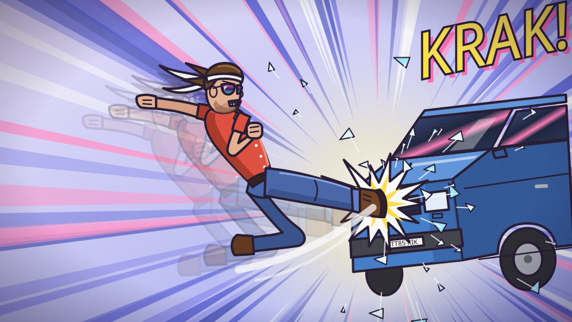

THE THANKLESS TASK
Cutscenes: big still moments, drawn like a 1980s action cartoon.

The cast
Him
Tall, square-jawed, a two-day beard. Red shirt, sleeves rolled, jeans, work boots. Aviators, even in the garage. A black belt in losing his temper: every snag winds him tighter, until something gets kicked.
The wife
Long dark hair, a red-lipped half smile, and the only one who ever says something useful about the car. Glamorous at any hour, pink satin at night, and very tired of the word "nearly".